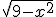
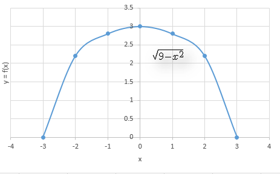

Retroalimentación
Modelación
Como pudimos observar es posible representar matemáticamente sucesos u objetos tomados de nuestro entorno y para ello se puede utilizar por ejemplo funciones, gráficas, tablas, o fórmulas.
Al representar matemáticamente un suceso u objeto, generamos un "modelo matemático", el proceso necesario para construir un modelo, requiere de un algoritmo lógico numérico conocido como modelación.
El modelo matemático puede representarse mediante números y literales y se denomina fórmula algebraíca.
Función.
Es una regla de asociación que relaciona el valor de una variable y determinado por el valor de una variable x, es decir existe un conjunto de elementos x llamado dominio que hace válida la función y denominada rango.
Sea f(x) = y = 
Dominio = x [-3, -2, -1, 0, 1, 2, 3]
Rango = y {0, 2.2, 2.8, 3, 2.8, 2.2, 0}
Gráfica: 
Gráficamente en nuestra función, existe un punto máximo=3 cuando x=0
y un valor mínimo=0 cuando x=-3 o x=3
En el bloque 4 podremos verificar cuando hallamos un valor máximo, mínimo o ninguno, por el momento nuestra forma de asegurarlo será tabulando los datos y=f(x) u observando su gráfica correspondiente.